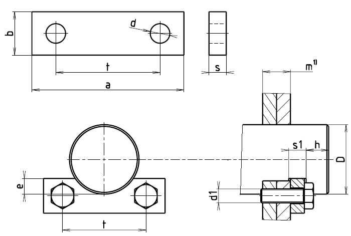

Příklad označení přídržky vyráběné z ocelové ploché tyče (ocel 11 373.0) s roztečí děr t = 125 mm:
PŘÍDRŽKA ČSN 02 2702 – 125
| t | a | b | s | d | Hmotnost [kg] |
|---|---|---|---|---|---|
| 40 | 60 | 20 | 5 | 9 | 0,004 |
| 50 | 80 | 25 | 5 | 11 | 0,071 |
| 63 | 100 | 30 | 6 | 14 | 0,13 |
| 80 | 120 | 40 | 8 | 18 | 0,27 |
| 100 | 150 | 50 | 12 | 22 | 0,64 |
| 125 | 180 | 50 | 12 | 22 | 0,77 |
| 160 | 220 | 60 | 14 | 26 | 1,33 |
| D | t | e | h | s1 | m | d1 |
|---|---|---|---|---|---|---|
| 25 až 36 | 40 | 4 | 6 | 6 | 1 | M8 |
| 37 až 50 | 50 | 5 | 8 | 6 | 1 | M10 |
| 51 až 63 | 63 | 7 | 10 | 7 | 1 | M12 |
| 64 až 90 | 80 | 10 | 12 | 9 | 1 | M16 |
| 91 až 125 | 100 | 13 | 15 | 13 | 1 | M20 |
| 126 až 170 | 125 | 16 | 18 | 13 | 2 | M20 |
| 171 až 250 | 160 | 20 | 20 | 15 | 2 | M24 |
POZNÁMKY
Počet přídržek m:
1 přídržka - podélná osa kolmo na směr působení síly,
2 přídržky - umístí se rovnoběžně se směrem působení síly;
Doporučuje se použít kouby s maticemi, kde to konstrukce nedovoluje, použijte závrtné šrouby. Šrouby a matice se doporučuje vhodným způsobem pojistit.